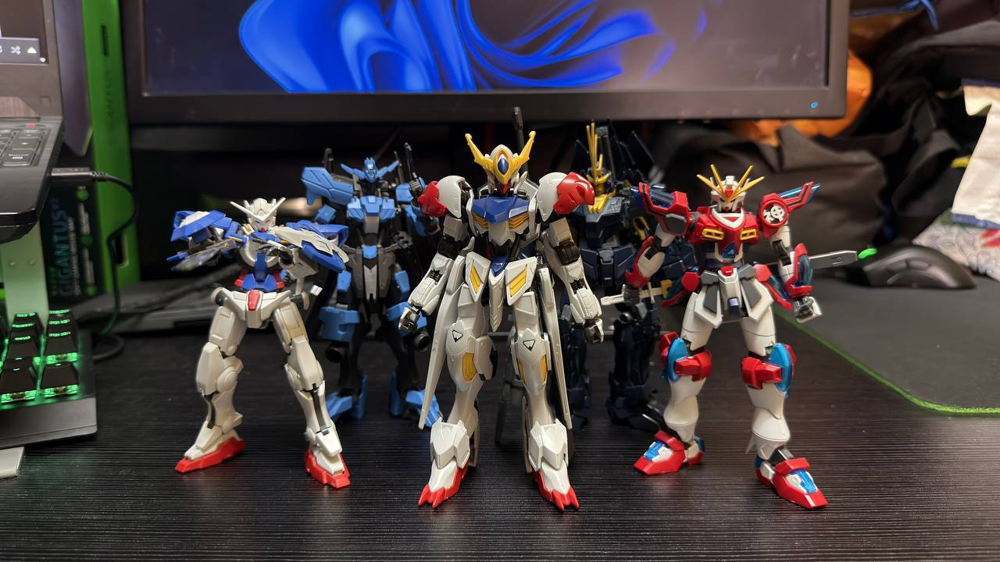

The things that take up most of my free time, and the places I dream of visiting.
01
Cars and superbikes
I'm a car enthusiast through and through. I love every kind of car, from Malaysian builds and JDM legends to European sports cars. I'm also into superbikes too. I could watch people fix and modify cars and bikes for hours.
For me, the fun is in the details which seeing how each part changes the way a machine looks, sounds and drives. These are the brands I follow most.
There is almost always something playing while I study, code or drive. I listen to all kinds of music, from hip-hop to pop and R&B. These are the artists on repeat right now. Click a name to visit their YouTube channel.
I build Gunpla which is the Gundam plastic model kits from Japan. By putting a kit together piece by piece from cutting parts off the frame to the final pose is relaxing in the same way coding is: follow the steps, fix your mistakes and end up with something you made yourself.
So far I have built High Grade (HG) kits which is the 1/144 scale that is a good starting point for beginners. Here are a few from my collection.

From left: Gundam Exia, Gundam Vidar, Gundam Barbatos Lupus, Gundam Banshee and Kamiki Burning Gundam
 ZULHAZRI AIMAN
ZULHAZRI AIMAN